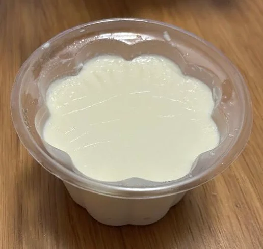
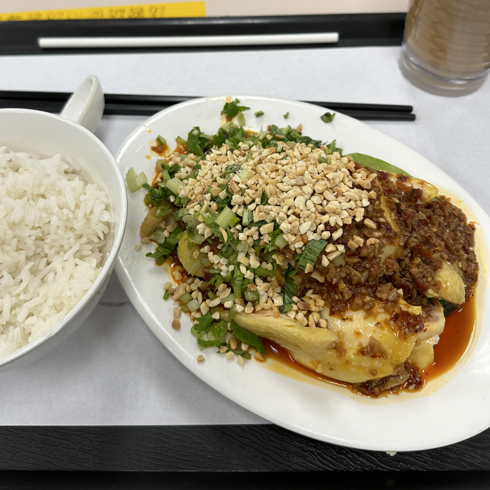

WelliMax Catering
Welcome to our beloved canteen, the culinary rollercoaster of our workplace! This is the place where the food is as unpredictable as our QC results. While you might stumble upon a delicious siu mei, you’ll also face the infamous mystery special that has sparked more than a few debates over lunch.
Location
B2, Block S, United Christian Hospital, 130 Hip Wo Street, Kwun Tong, Kowloon
Recommendations

Milk pudding
“Sure, it looks super ordinary, so if you're expecting Instagram gold, you might be disappointed 🙈. But the value is amazing! For just $8.x with a staff discount, you get a milk pudding that’s really smooth and creamy 😋. It’s way better than the jelly stuff from the supermarket and can totally compete with those $20 to $30 puddings! Plus, it’s huge—good luck finishing it after your meal 😂😂”
